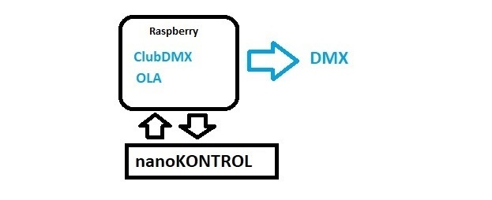
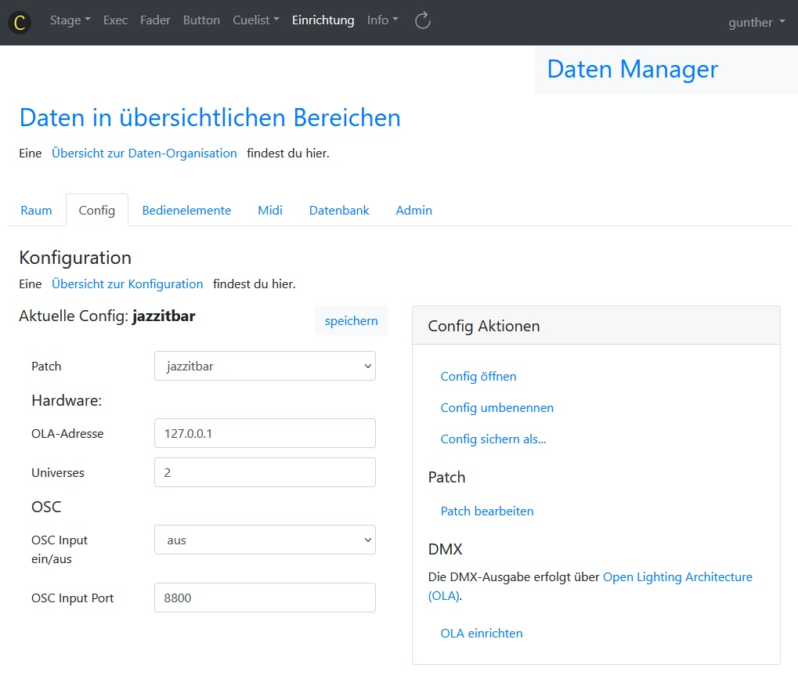
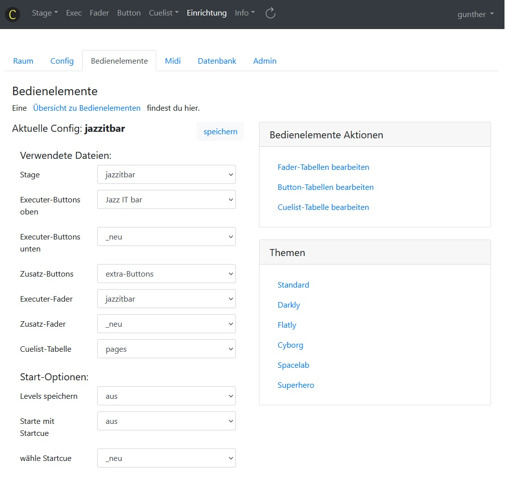
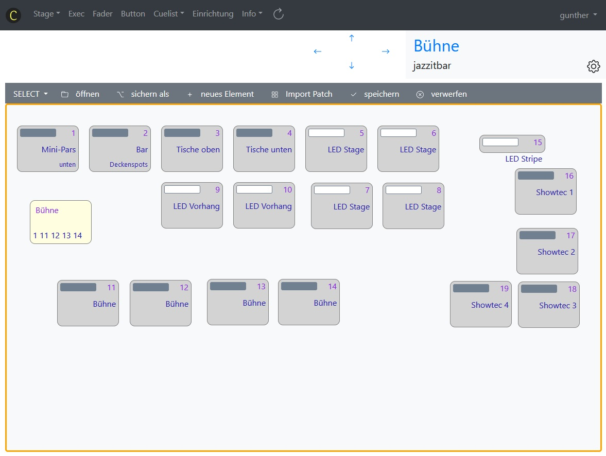
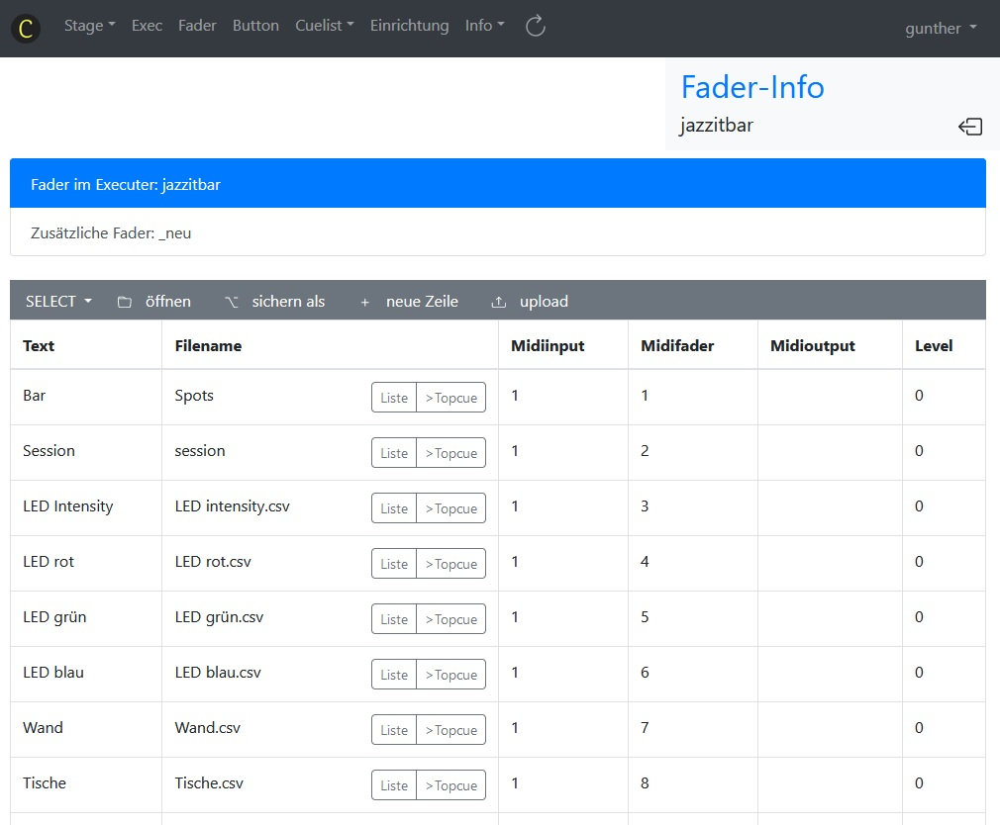
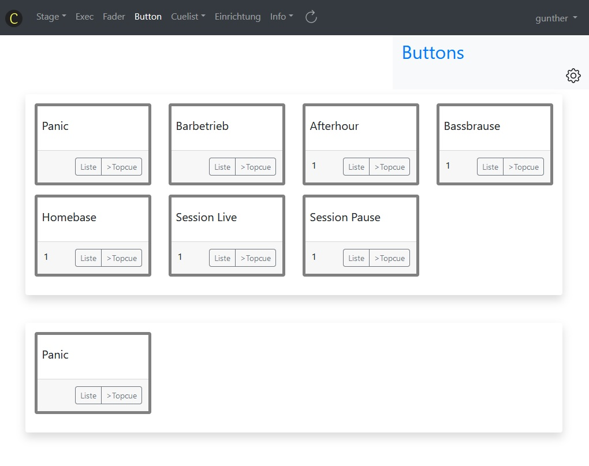
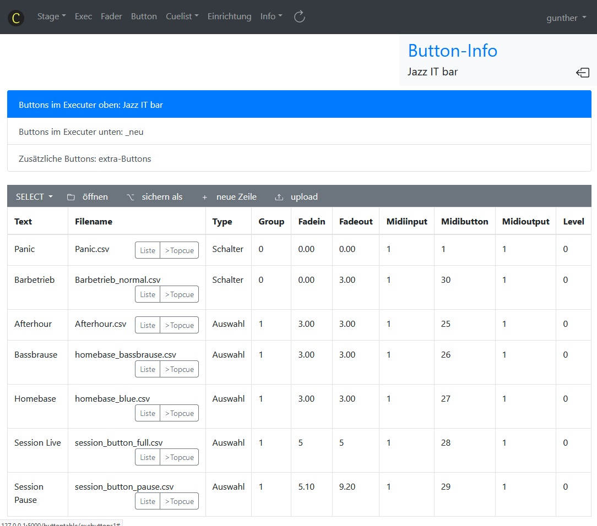

Einrichtung¶
ClubDMX kommt mit sehr sparsamen Hardware-Komponenten aus. Als Basis-Hardware kann ein Raspberry PI eingesetzt werden, das ist aber nicht zwingend notwendig. ClubDMX läuft auf jeder Hardware, wo Python-3 mit einigen Erweiterungen (die zusätzlich zu Python installiert werden) einsatzbereit ist.
ClubDMX und OLA¶
Open Lighting Architecture (OLA) ist die Schnittstelle zur Hardware, daher muss auch OLA installiert werden. Zur Einrichtung von OLA findest du hier weitere Informationen. Zur Installation von OLA auf Mac kann ich leider nichts beitragen, ich habe OLA auf dem Raspberry und auf (Debian) Linux installiert und verwendet.
Der große Vorteil von OLA besteht darin, dass damit eine ganze Palette von Ethernet Protokollen und USB/Serial/Netzwerk Geräten zur Ansteuerung zur Verfügung stehen.
Ein einfacher Hardware-Aufbau mit einem Raspberry PI sieht so aus:
ClubDMX und OLA lassen sich sehr einfach auf mehrere Universen erweitern. Falls ClubDMX in einem größeren Aufbau gedacht ist, können auch mehrere Raspberry PIs eingesetzt werden. Oder es können an einen Raspberry PI mehrere USB DMX Adapter angesteckt und für verschiedene Universen konfiguriert werden.
Ein größerer Hardware-Aufbau mit mehreren Raspberry PIs könnte so aussehen:
Verzeichnisse¶
Die Verzeichnisstruktur besteht aus zwei Ordnern, einem Code-Ordner und
einem Raum-Ordner. Für diese Ordner gibt es Vorgabe-Namen, nämlich
clubdmx_code und clubdmx_rooms .
Über die Environment-Variablen CLUBDMX_CODEPATH und CLUBDMX_ROOMPATH
können auch andere Verzeichnisse festgelegt werden.
Raum einrichten¶
Die Einrichtung eines Raumes erzeugt im Raum-Verzeichnis (clubdmx_rooms)
einen neuen Ordner. Hier werden alle projektspezifischen Daten gespeichert:
Patch, Cues, Fader, Buttons, Stage etc.
Es gibt einige Möglichkeiten zur Erzeugung eines neuen Raums.
Einen neuen Raum anlegen,
einen bestehenden Raum unter einem anderen Namen sichern,
einen auf USB-Stick gepeicherten Raum laden (restore),
einen gezippten Raum hochladen.
Config¶
In einer Config sind die im Einsatz befindlichen Hardware-Komponenten, das Fader- und Button-Layout, das Stage-Layout und weitere Einstellungen gespeichert. In einem Raum können auch mehrere Configs vorhanden sein, zum Beispiel um unterschiedliche Theaterprojekte zu speichern. Der Zusammenhang von Raum und Config wird in Räume und Config noch näher erläutert.
Die Config ist in verschiedene Bereiche gegliedert. Diese Bereiche sind in Tabs zusammengefasst. Der erste Bereich definiert die Hardware-nahen Einstellungen: Auswahl eines Patch, OLA und OSC.
Der nächste Config-Berich behandelt die Bedienelemente. Hier werden die Tabellen ausgewählt, die Stage, Fader und Buttons definieren.
Das Aussehen der Webseite kann hier durch eine Auswahl eines Themas verändert werden.
Der nächste Bereich beinhaltet die Midi-Einstellungen. Das ist zwar auch ein Hardware-nahes Thema, bekommt aber aus Gründen der Übersichtlichkeit einen eigenen Tab.
Der nächste Bereich in der Config gibt einen Überblick über die verwendeten Datenbank-Tabellen. In ClubDMX sind ja alle Daten in CSV-Tabellen gespeichert. Diese Tabellen sind im Raum-Ordner gepeichert. Hier können sie angesehen und editiert werden. Dazu stehen Zeilen- und Zellen-Funktionen zur Verfügung.
Mit Copy und Paste können einzelne oder mehrere Zeilen von einer Tabelle in eine andere übertragen werden, Zeilen können gelöscht oder neue Zeilen können über Eingabeformular angelegt werden.
Beim Editieren von einzelnen Zellen wird geprüft, ob der eingegebene Wert in die Zelle „passt“, das heißt, ob die Regeln für diese Zelle erfüllt sind.
Als weitere Hilfsmittel finden sich auf diesem Tab Funktionen zur Bereinigung der Datenbank: unbenutzet Cues löschen, alle Änderungen sichern oder alle Änderungen speichern.
Für den User Admin gibt es einen weiteren Tab, auf dem einige Tools zu finden sind: Backup und Restore der User-Datenbank, einen Link zur OLA-einrichtung und diverse Debug-Tools.
Stage einrichten¶
Sobald ein Patch angelegt ist, kann dieser in die Stage importiert werden. Die Heads werden in einem Standard-Raster eingefügt. Im Modus SELECT können die Heads in Position und Größe verändert werden.
Fader einrichten¶
Die Fader befinden sich in zwei Tabellen. Eine Tabelle beinhaltet die Fader, die auf der Exec-Seite sichtbar sind. Eine zweite Tabelle beinhaltet die Fader, die nur auf der Fader-Seite zu finden sind. Das hat den Zweck, für den Basic-Benutzer nur die für ihn relevanten Fader auf seiner Start-Seite platzieren zu können.

Durch Drücken auf das Zahnrad-Symbol gelangst du zur Einrichtungs-Seite für die Fader. Hier kannst du mit den üblichen Tabellen-Funktionen (copy/paste, Feld editieren, sichern als, neue Zeile) die Fader einrichten. Die beiden oben genannten Tabellen (Exec-Fader, Zusatz-Fader) stehen hier zur Bearbeitung. Mit cut/paste können die Fader von einer Tabelle in die andere verschoben werden.
Buttons einrichten¶
Die Buttons befinden sich in drei Tabellen: Exec-Buttons oben, Exec-Buttons unten und zusätzliche Buttons. Je nachdem, in welcher Tabelle die Buttons platziert werden, wird die Position der Buttons festgelegt.
Über das Zahnrad-Symbol kann auch hier zur Einrichtungs-Seite gewechselt werden. Auch hier kann über die üblichen Tabellen-Funktionen die Anordnung, die Beschriftung und die Funktion der Buttons eingerichtet werden.
Mit Copy/Paste können Fader zu Buttons gemacht werden und Buttons zu Fadern. Einfach Zeile(n) ausschneiden und in die gewünschte Tabelle einfügen.
Exec-Seite einrichten¶
Die Einrichtung der Fader und Buttons bestimmt das Erscheinungsbild der Exec-Seite. Es gibt daher keine eigene Einrichtungs-Seite für die Exec-Seite, siehe also Fader und Buttons .

Weitere Informationen zur Einrichtung findest du im Kapitel Mit ClubDMX arbeiten, da gibt es Details zu den einzelnen Tabs.
Einrichten von zeitabhängiger Steuerung mit Crontab (in Linux)¶
Zur Unterstützung von Fixinstallationen mit Tages- oder
Wochen-abhängigen Anforderungen gibt es die Möglichkeit, über den
Linux-Befehl crontab Lichtszenen zu steuern. Hier ist exemplarisch
skizziert, wie das funktioniert.
Über OSC können externe Programme auf ClubDMX zugreifen. Diese Eigenschaft
nützt das Kommandozeilen-Tool sendosc.sh
(im Programm-Verzeichnis zu finden).
Beispiel für einen Crontab-Eintrag, der jede Minute aufgerufen wird und den dritten Button aus der oberen Exec-Zeile betätigt:
* * * * * /home/pi/clubdmx_code/sendosc.sh --address=/exebutton1/3
Die unterstützten OSC-Befehle finden sich auf der ClubDMX Webseite und auch hier in der Doku im Kapitel OSC Input.
Mit dem Linux-Befehl crontab -e wird die Crontab editiert, mit dem
Befehl crontab -l wird sie angezeigt und mit crontab -r wird sie
gelöscht.